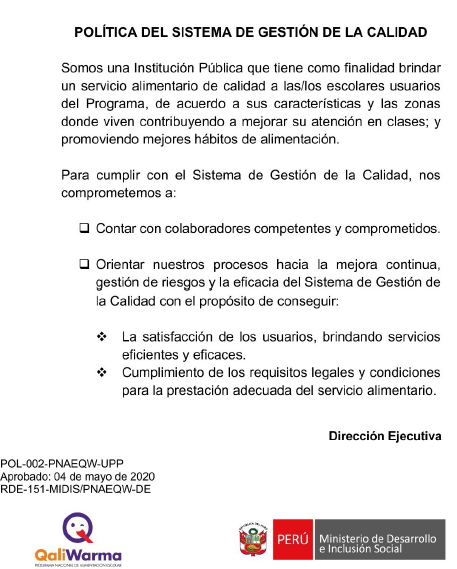

Manual del Sistema de Gestión de la Calidad
Versión 07 - RDE 371-2022-MIDIS/PNAEQW-DE
UT: JUNIN (25 de julio del 2023)
ítems a auditar
Jefe de la UT/Responsable del SGC: 6.1.3, 6.3, 7.3, 8.1, 8.2, 10.1, 10.4, 10.7, 11.1, 12.3
SPA/SC: 7.3, 7.4, 8.2, 8.3, 9.5, 10.5, 10.6, 11.1, 10.7
Administrador de la UT: 7.3, 8.2, 9.1, 9.4, 9.5, 10.2
I. Objetivo
Establecer la estructura del Sistema de Gestión de la Calidad y los procedimientos a través de los cuales el Programa Nacional de Alimentación Escolar Qali Warma estandariza su capacidad para satisfacer de manera consistente y constante las necesidades de sus clientes, dentro del marco legal aplicable y regido por las especificaciones de la norma ISO 9001:2015, resaltando las debidas exclusiones con sus justificaciones; y asimismo, demostrar su compromiso con la gestión de riesgos y mejora continua de sus procesos, con la finalidad de conseguir de manera eficiente y eficaz sus objetivos estratégicos.
II Alcance
El presente manual es de aplicación para el proceso de liberación de productos o raciones destinadas a garantizar la calidad del servicio alimentario de forma oportuna y para el proceso de transferencia de recursos financieros a los Comités de Compra, con el seguimiento del pago de los Comités de Compra a los proveedores del servicio alimentario, cuyas actividades son desarrolladas en la Sede Central y las Unidades Territoriales de Arequipa, Cusco, Huánuco, Junín, La Libertad, Lambayeque, Piura, Puno, San Martín, Tumbes y Lima Metropolitana y Callao.
Los siguientes requisitos de la norma ISO 9001:2015 no son aplicables para el Sistema de Gestión de la Calidad del Programa Nacional de Alimentación Escolar Qali Warma:
a) Requisito 8.3 DISEÑO Y DESARROLLO DE LOS PRODUCTOS Y SERVICIOS, debido a que la realización del servicio de supervisión y liberación de productos y raciones, así como el servicio de transferencia de recursos financieros son estándares, es decir que no requieren el diseño y/o desarrollo de nuevas metodologías y herramientas para su planificación y realización para cada prestación del servicio.
b) Requisito 8.5.4 PRESERVACIÓN, debido a que no se cuenta con partes constitutivas físicas del servicio para preservar durante su realización, ni durante la prestación del mismo, salvo los datos que conforman el servicio brindado.
III Base Normativa
3.1 Ley N° 27658, Ley Marco de Modernización de la Gestión del Estado.
3.2 Decreto supremo N° 109-2012–PCM, que aprueba la Estrategia de Modernización de la Gestión Pública.
3.3 Decreto Supremo N° 008-2012-MIDIS, que crea el Programa Nacional de Alimentación Escolar Qali Warma y sus modificatorias.
3.4 Decreto Supremo Nº 004-2013-PCM, que aprueba la Política Nacional de Modernización de la Gestión Pública.
-
3.5 Resolución Ministerial N° 148-2015-MIDIS, que aprueba los lineamientos para el desarrollo de Sistemas de Gestión de Calidad en los Programas Sociales.
-
3.6 Resolución Ministerial N° 283-2017-MIDIS, que aprueba el Manual de Operaciones del Programa Nacional de Alimentación Escolar Qali Warma.
-
3.7 Resolución Ministerial N°138-2021-MIDIS, que aprueba el Manual de Gestión de Riesgos de Procesos en el Ministerio de Desarrollo e Inclusión Social (Manual N° 004-2021- MIDIS).
-
3.8 Resolución de Dirección Ejecutiva N° 214-2017-MIDIS/PNAEQW, que aprueba la conformación del Comité de Calidad del Programa Nacional de Alimentación Escolar Qali Warma.
IV Documentos de Referencia
-
4.1 PRO-002-PNAEQW-UA - Procedimiento de Orientación y Atención a la/el Ciudadana/o del Programa Nacional de Alimentación Escolar Qali Warma. Versión Nº 02 - RDE 356-2020-MIDIS/PNAEQW
-
4.2 PRO-006-PNAEQW-UPPM - Procedimiento para la Aplicación de las Encuestas de Satisfacción del Sistema de Gestión de la Calidad. Versión 02 - RDE 97-2021-MIDIS/PNAEQW-DE
-
4.3 PRO-033-PNAEQW-UGCTR - Procedimiento para la transferencia de recursos financieros a los Comités de Compra y rendición de cuentas en el marco del modelo de cogestión del Programa Nacional de Alimentación Escolar Qali Warma. Versión 4 - RDE Nº D000334-2022-MIDIS/PNAEQW-DE
-
4.4 PRT-039-PNAEQW-USME - Protocolo para la Supervisión y Liberación de Alimentos en los Establecimientos de Proveedoras/es del Programa Nacional de Alimentación Escolar Qali Warma. Versión N° 06 - RDE N° D000487-2022-MIDIS/PNAEQW-DE
4.5 Norma Internacional ISO 9000:2015: Sistema de Gestión de la Calidad - Fundamentos y Vocabulario.
4.6 Norma Internacional ISO 9001:2015. Sistema de Gestión de la Calidad – Requisitos.
-
RDE 151-2020-MIDIS/PNAEQW-DE - Política del Sistema de Gestión de la Calidad
-
RDE Nº D000162-2023-MIDIS-PNAEQW-DE - Plan Anual de Desarrollo del Sistema de Gestión de la Calidad del Programa Nacional de Alimentación Escolar Qali Warma 2022”, con código de documento normativo PLA-003-2022-PNAEQW-UPPM, Versión 1
-
RDE 420-2017-MIDIS/PNAEQW - Fichas Técnicas de Puestos de Trabajo del PNAEQW – Fase I” VERSIÓN 03
-
RDE 156-2022-MIDIS/PNAEQW-DE - Procedimiento para la Gestión de Acciones Correctivas y Oportunidades de Mejora del Programa Nacional de Alimentación Escolar Qali Warma”, con código de documento normativo PRO-003-PNAEQW-UPPM, Versión 4
-
Resolución Ministerial N° 138-2021-MIDIS - Aprobar el Manual N° 004-2021-MIDIS – Manual para la Gestión de Riesgos de Procesos en el Ministerio de Desarrollo e Inclusión Social
-
RDE 535-2017-MIDIS/PNAEQW-DE - Instructivo para la administración de legajos de personal del PNAEQW con código de documento normativo INS-003-PNAEQW-URH, versión 02
-
RDE 178-2018-MIDIS/PNAEQW-DE - Directiva para la gestión de copias de respaldo y resguardo de la información del PNAEQW, versión n° 01
-
RDE 137-2022-MIDIS/PNAEQW - Plan de Comunicación Estratégica del Programa Nacional de Alimentación Escolar Qali Warma 2023”, con código de documento normativo PLA-002-PNAEQW-UCI, Versión 1
-
RDE 289-2019-MIDIS/PNAEQW - Directiva para la formulación, modificación y aprobación de documentos normativos del PNAEQW" con código de documento normativo DIR-034-PNAEQW-UPPM - Versión N° 1
-
RDE 96-2021-MIDIS/PNAEQW-DE - Procedimiento para el control de las Salidas No Conformes en el Programa Nacional de Alimentación Escolar Qali Warma” con código de documento normativo PRO-009-PNAEQW-UPPM - Versión N° 03
-
RDE 161-2022-MIDIS/PNAEQW-DE - Procedimiento para la Revisión por la Dirección del Sistema de Gestión de la Calidad y de Seguridad de la Información del Programa Nacional de Alimentación Escolar Qali Warma”, con código de documento normativo PRO-004-PNAEQW-UPPM, Versión 4
Relacionados
V Abreviatura o Siglas
CC : Comité de Compra
DIGESA : Dirección General de Salud Ambiental
DNI : Documento Nacional de Identidad
ISO : International Organization for Standardization (Organización Internacional de Normalización)
IE : Institución Educativa Pública
IIEE : Instituciones Educativas Públicas
MIDIS : Ministerio de Desarrollo e Inclusión Social
PC : Personal Computer
PNAEQW : Programa Nacional de Alimentación Escolar Qali Warma
POI : Plan Operativo Institucional
RJ : Resolución Jefatural
SAC : Solicitud de Acciones Correctivas
SADE : Sistema de Administración de Expedientes Electrónicos
SANIPES : Organismo Nacional de Sanidad Pesquera
SENASA : Servicio Nacional de Sanidad Agraria
SGC : Sistema de Gestión de la Calidad
SIAF : Sistema Integrado de Administración Financiera
SIGO : Sistema Integrado de Gestión Operativa
SPA : Supervisor/a de Plantas y Almacenes
TDR : Términos de Referencia
UA : Unidad de Administración
UGCTR : Unidad de Gestión de Contrataciones y Transferencia de Recursos
UPPM : Unidad de Planeamiento, Presupuesto y Modernización
URH : Unidad de Recursos Humanos
USME : Unidad de Supervisión, Monitoreo y Evaluación
UT : Unidad Territorial
UTI : Unidad de Tecnología de la Información
VI Contexto de la Organización
Qali Warma es un programa del MIDIS que brinda servicio alimentario como complemento educativo a niñas/os matriculadas/os en instituciones educativas públicas del nivel inicial y primaria a nivel nacional, y de secundaria de la Amazonía peruana, a fin de contribuir a mejorar la atención en clases, la asistencia escolar y los hábitos alimenticios, promoviendo la participación y la corresponsabilidad de la comunidad local.
La estructura orgánica del PNAEQW se encuentra establecida en el Manual de Operaciones, aprobado con Resolución Ministerial N° 283-2017-MIDIS, el cual describe los siguientes órganos y unidades orgánicas:
- Alta Dirección
Dirección Ejecutiva.
- Órgano de Control
Órgano de Control Institucional.
- Unidades de Asesoramiento
Unidad de Planeamiento, Presupuesto y Modernización.
Unidad de Asesoría Jurídica.
- Unidades de Apoyo
Unidad de Administración
Unidad de Recursos Humanos
Unidad de Tecnologías de la Información
Unidad de Comunicación e Imagen
- Unidades Técnicas
Unidad de Organización de las Prestaciones
Unidad de Gestión de Contrataciones y Transferencia de Recursos
Unidad de Supervisión, Monitoreo y Evaluación.
- Unidad Territorial
Unidades Territoriales a nivel Nacionala) El PNAEQW mediante el establecimiento del contexto, articula sus objetivos a nivel institucional e identifica los elementos o circunstancias del contexto externo (oportunidades y amenazas) y del contexto interno (fortalezas y debilidades) a tener en cuenta para la planificación estratégica del SGC.
b) Para el desarrollo de la Matriz FODA se deben tener en cuenta las siguientes definiciones y consideraciones:OPORTUNIDADES AMENAZAS Definición: Hechos del entorno que resultan positivos para la institución, si es capaz de detectarlos y explotarlos a su favor. Definición: Situaciones que provienen del exterior (del Programa) y que pueden afectar negativamente en el desempeño de la actividad.
FORTALEZAS DEBILIDADES Definición: Capacidades especiales y características del Programa. Definición: Aquellos factores del Programa que lo sitúan en una posición desfavorable.
Consideraciones:
• El análisis del contexto interno puede incluir, sin limitarse a: la estructura del PNAEQW, las funciones y las responsabilidades, las políticas, los objetivos y las estrategias que se establecen para su realización.
• Toda validación de algún factor interno debe considerar las relaciones con las partes interesadas, sus percepciones y sus valores; la cultura del PNAEQW, los sistemas de información, los flujos de información y los procesos de toma de decisiones, las normas, directrices y los modelos adoptados por la entidad y la extensión de las relaciones contractuales.
• El registro de la identificación de las fortalezas y debilidades se realiza conforme al formato (Anexo Nº 02).
c) La/el responsable del SGC realiza el seguimiento de las estrategias establecidas en la “Matriz FODA” y de encontrar alguna desviación genera una SAC.
FODA ASPECTO ESTRATÉGICO RIESGO Probabilidad que ocurra CAUSAS Tratamienot del riesgo ACCIÓN RESPONSABLE FECHA Fortaleza Capital Humano multidisciplinario comprometido en el cumplimiento de los objetivos institucionales del PNAEQW Capital Humano con limitado compromiso en el logro de objetivos institucionales del PNAEQW bajo Desconocimiento y baja sensibilización del personal con los Objetivos Institucionales del PNAEQW reducir Realizar la inducción del personal nuevo. Capacitar al capital humano constantemente en políticas, objetivos, valores institucionales, código de ética del PNAEQW (PDP) Jefa (e) de URH Permanente Fortaleza Tecnológias de la Información (TI) como soporte para el desarrollo de los procesos operativos y la administracion de la información del PNAEQW (SIGO, SADE, SGD, Georeferenciación, Firma Digital, entre otros) Data Center de la Sede Central deje de funcionar medio Corte de luz, incendio o ruptura de la fibra óptica evitar Mantenimiento preventivo del data center. Servicio externo (grupos electrógenos que dan energía a los servidores). Jefa (e) de UTI Permanente Fortaleza Proceso de Transferencias de recursos financieros, certificado bajo la Norma ISO 9001:2015 Perder la certificación del Proceso de Transferencia medio Incumplimiento de los requisitos de la Norma ISO 9001:2015 evitar Sensibilizar al personal involucrado en el proceso certificado a fin de mantener el cumplimiento de los requisitos de la Norma ISO 9001: 2015 Jefa (e) de UPPM Permanente Seguimiento al cumplimiento de los requisitos de la Norma ISO 9001:2015 Fortaleza Gestión eficiente y eficaz en la transferecia de recursos financieros del servicio alimentario brindado Deficiente Transferencia de Recursos Financieros de acuerdo a lo especificado en el contrato y adenda medio Presentación inoportuna de los expedientes por parte del proveedor reducir Hacer seguimiento al proveedor luego de la firma del contrato para que cumpla con lo acordado de acuerdo al cronograma Jefe de UGCTR Permanente Demora en la evaluación de los expedientes por parte de las Unidades del PNAEQW Capacitación y seguimiento del personal responsables de la evaluación de los expedientes. Análisis continuo del proceso de transferencia de recursos financieros para el pago a proveedores del servicio alimentario, con el objetivo de identificar oportunidades de mejora tanto en los sitemas informáticos como en los documentos normativos, a fin de proponer mejoras que contribuyan a la celeridad del pago y al sistema de control interno. Fortaleza Proceso de Liberación de productos o raciones en las Unidades Territoriales de acuerdo al alcance del SGC certificado bajo la Norma ISO 9001:2015 Perder la certificación del Proceso de Liberación de Productos y Raciones medio Incumplimiento de los requisitos de la Norma ISO 9001:2015 evitar Sensibilizar al personal involucrado en el proceso certificado a fin de mantener el cumplimiento de los requisitos de la Norma ISO 9001: 2015 Jefe de UPPM Permanente Seguimiento al cumplimiento de los requisitos de la Norma ISO 9001:2015 Debilidad Alta rotación de personal que conllevan a la pérdida de conocimiento organizacional y costos de aprendizaje del nuevo personal Pérdida de Know How del PNAEQW Bajo nivel de satisfacción, desmotivación, escaso sentido de pertenencia y/o poco compromiso con las políticas y objetivos del Programa. Mejores ofertas económicas en otras Entidades Públicas. reducir Capacitación al personal (PDP), mejorar el clima laboral (Plan de Bienestar Social) Jefe de URH Anual Debilidad Escaso abastecimiento de equipamiento técnico (Lupas, tamiz, etc), tecnológico (Plan de datos limitados) y equipos de protección personal para las supervisiones y monitoreos de acuerdo a las zonas donde se realiza el trabajo Inoperatividad de los procesos operativos del PNAEQW Poco presupuesto para invertir en equipos técnicos, tecnológicos y equipos de protección personal reducir Efectuar la adquisición de equipos técnicos, tecnológicos y de protección personal necesarios para los colaboradores de las Unidades Territoriales Jefe de USME Permanente Amenaza Legislación que entra en vigencia durante la prestación del servicio alimentario y que representa modificación de los requisitos establecidos en la fichas técnicas de los alimentos brindados por el programa Alimentos que no se adecuan a la legislación vigente medio Desconocimiento y baja sensibilización del personal con los Objetivos Institucionales del PNAEQW evitar Difusión oportuna a los proveedores respecto a los cambios en las especificaciones técnicas. Fortalecimiento de los EA de las UT respecto a los requisitos establecidos en las ESP. Estricto cumplimiento del protocolo para la supervisión y liberación de los alimentos por parte de los SPA. Jefa de UOP /Jefe de USME Permanente Amenaza Limitaciones económicas derivadas de la recesión o incremento del costo de los alimentos, afectando así el servicio alimentario Presupuesto asignado por MIDIS al PNAEQW es menor al solicitado medio MIDIS designa el presupuesto para los Programas Sociales en función al presupuesto designado por el Gobierno y la priorización de sus necesidades y políticas asumir Sustentar ante el MIDIS que el PNAEQW cumple un rol fundamental al brindar el servicio alimentario a los niños y niñas a nivel nacional; la cual permitirá mayor aprendizaje escolar; por esto necesita un mayor presupuesto y se debe incrementar de acuerdo al crecimiento de la población beneficiada Jefe de UPPM Permanente Amenaza Cambios en el medio ambiente (cambios climáticos, derrumbes, desprendimiento de rocas, fenómeno del niño y niña, etc.) que afecten el desarrollo de las clases y el acceso de los proveedores a las zonas donde se brinda el servicio alimentario Suspensión de las clases. Limitaciones en la entrega de productos debido a la escasez de alimentos primarios e interrupción en las vías de acceso de los proveedores a las IIEE medio Desabastecimiento de alimentos debido a las pérdidas de cultivos por los desastres naturales. Derrumbes, huaycos, inundaciones y carreteras interrumpidas. reducir Planificar junto a los proveedores un cuadro de actividades de contingencias en caso de desastres naturales o conflictos sociales, la cual permitirá que ningún niño o niña a nivel nacional se quede sin el servicio alimentario Identificar productos alternativos en cada región del país, que permitan la continuidad del servicio alimentario ante la escasez de algún alimento. Jefa de UOP y Jefe de USME Cuando se presente estos casos Amenaza Conflictos sociales que pondrían en riesgo la planificación y ejecución de las operaciones del Programa Entrega de productos fuera de fecha y en mal estado medio Cierre de carreteras. Manifestaciones políticas o sociales. reducir Generar un historial de rutas viables y no viables para tomar en cuenta en la planificación Jefa de UOP y UT Cuando se presente estos casos Amenaza Estado de Emeregencia Nacional por pandemia Exposición y contaminación del personal durante la prestación del Servicio Alimentario Escolar medio Incumplimiento de los protocolos de bio-seguridad por parte del personal para evitar posibles contagios del COVID-19 evitar Aprobación e implementación de protocolo de bio seguridad, como preventivo de contagios del COVID-19 Jefe de USME En el Estado de Emergencia Supervisar el cumplimiento de los protocolos del Plan Covid en cada establecimiento de los proveedores y en las instituciones educativas Suspensión de la Prestación del Servicio Alimentario Escolar durante el Estado de Emergencia Insuficientes normativas para adecuar la prestación del Serviicio Alimentario Escolar en el Estado de Emergencia Adecuación de las normativas para la prestación del Servicio Alimentario en el Estado de Emergencia Jefes de UO/UPPM/UAJ/DE En el Estado de Emergencia Oportunidad Establecer estrategias de acceso a las Instituciones Educativas lejanas El servicio alimentario no llegue a niñas y niños en los lugares de difícil acceso medio Deficiente infraestructura vial a nivel nacional asumir Establecer convenio entre la Fuerza Aérea del Perú y el MIDIS, y velar por cumplimiento del cronograma establecido para el traslado de los alimentos a IIEE de difícil acceso Dirección /Jefe de UOP/ Jefe de UPPM Oportunidad Formar alianzas Estratégicas y de articulación intergubernamentales e intersectoriales como mecanismos de aseguramiento de un servicio de Calidad Incumplimiento de los compromisos firmados bajo Falta de seguimiento de la ejecución de los convenios suscritos asumir Sistematizar el seguimiento de los convenios suscritos con las entidades estatales Jefe de UPPM Permanente El PNAEQW define y comprende en su “Matriz de Partes Interesadas” (Anexo Nº 03) los efectos o efectos potenciales y su capacidad para proporcionar regularmente el servicio que satisfaga los requisitos de las partes interesadas, los legales y los establecidos por el PNAEQW.
a) Para el establecimiento de las partes interesadas externas debe tomarse en consideración lo siguiente:
-
• La comprensión del contexto externo es importante para asegurar que los objetivos e inquietudes de los actores externos se tengan en cuenta cuando se desarrollan los criterios del SGC con la finalidad de la satisfacción de sus clientes externos.
• El contexto externo puede incluir, pero no se limita a las entidades públicas que interactúan con el PNAEQW, la industria, las/ los proveedoras/es, las/los usuarias/os, actores del proceso de cogestión, entre otros actores que participan o se ven impactados de manera positiva y negativa por la intervención de la entidad. Esta información es registrada en la “Matriz de Partes Interesadas” (Anexo Nº 03).
-
• La comprensión del contexto interno es importante porque constituye todo aquello que en el seno del PNAEQW puede influir en la manera en la que la entidad gestiona su SGC, para que se encuentre alineado a las estrategias, los procesos y la estructura de la entidad.
• El contexto interno puede incluir, pero no se limita a la estructura del PNAEQW, donde se contempla a las/los servidoras/es civiles para la identificación de sus necesidades, a fin de que en función de las mismas se pueda establecer las estrategias dentro del SGC para su correspondiente satisfacción como clientes internos. Esta información es registrada en la “Matriz de Partes Interesadas” (Anexo Nº 03).

El PNAEQW establece, implementa, mantiene y mejora los procesos necesarios para el SGC, cuya interacción y descripción se presenta en la Figura N°1: “Mapa de Procesos del Sistema de Gestión de la Calidad del PNAEQW”

DESCRIPCIÓN DEL MAPA DE PROCESOS DEL SGC:
PROCESO ACTIVIDADES NOMBRE FINALIDAD E.1 Gestión de la Dirección Establecer los lineamientos de mediano y corto plazo del PNAEQW de forma colaborativa, así como la verificación continua de su avance llevando registro mediante la aprobación de los documentos de gestión. E.2 Administración del SGC Planificar, organizar y controlar la efectividad y mantener el SGC. M.1 Planificación para la Gestión de Supervisión y Liberación Planificar en el POI los recursos necesarios para la gestionar las supervisiones y liberaciones que se encuentran programadas durante el año académico de las IIEE. M.2 Gestión de Supervisión y Liberación de Raciones y Productos – Unidades Territoriales M.2.1 Recepción de expedientes para la liberación Recibir los expedientes para la liberación presentados por el/la proveedor/a del servicio alimentario, en cumplimiento al cronograma establecido en su contrato. M.2.2 Revisión y verificación de documentos obligatorios Revisar los documentos obligatorios presentados en el expediente para la liberación, verificando el cumplimento de las especificaciones técnicas de alimentos, bases integradas del proceso de compras y los documentos emitidos por DIGESA, SENASA, SANIPES y/o certificados emitidos por laboratorios particulares. M.2.3 M.2.3.A Verificación higiénico sanitario del establecimiento Verificación higiénico sanitaria de la planta y/o almacén en compañía del personal responsable de Control de Calidad de la planta o almacén, solicitar el Certificado de Saneamiento Ambiental (trimestral), control médico del personal (semestral) y verificación de los compromisos del/de la proveedor/a, además utiliza el Anexo N.º 02 – Ficha de Supervisión Higiénico Sanitario al Establecimiento del/de la Proveedor/a-Modalidad de Atención Raciones o el Anexo Nº 03 - Ficha de Supervisión Higiénico Sanitario del Establecimiento del/de la Proveedor/a – Modalidad de Atención Productos para completar la verificación del PRT-039-PNAEQW-USME. M.2.3.B Supervisión de la producción de raciones Supervisar los insumos y todo el proceso de producción de las raciones, la cual se debe realizar en óptimas condiciones higiénicas sanitarias y en el establecimiento declarado para garantizar la inocuidad y calidad de los alimentos. M.2.4 Muestreo y evaluación de productos o raciones Realizar el muestreo en la modalidad productos, de acuerdo al Anexo N° 01 - Instructivo para el muestreo y verificación de las características físico organolépticas de alimentos del PNAEQW del PRT-039-PNAEQW-USME y evaluar los productos muestreados; el muestreo y la evaluación se realiza bajo lo establecido en el Apéndice 01,02 y 03. El muestreo y evaluación de raciones se realiza de acuerdo a lo establecido en el apéndice 01 y 03. M.2.5 Liberación de productos o raciones Verificar que los productos o raciones conformes sean liberados, para ello se registra en el SIGO dicha actividad, y solo si fuera necesario se utiliza el Anexo N° 7 - Acta de Supervisión y Liberación - Establecimiento del/de la Proveedor/a del PRT-039-PNAEQW-USME. M.2.6 Verificación de carga y estiba Verificar las condiciones higiénicos sanitarias del vehículo de transporte, según lo establecido en el Anexo Nº 06 –Ficha de Verificación del Vehículo de Transporte, Carga y Estiba de Alimentos, cuyo resultado debe registrarse en el SIGO. M.3 Planificación para la Transferencia de Recursos Financieros Planificar los recursos necesarios para realizar las transferencias de recursos financieros a los CC para el pago de las/los proveedoras/es del servicio alimentario de acuerdo a los contratos vigentes. M.4 Gestión de Transferencia de Recursos Financieros M.4.1 Recepción de solicitud de pago Recibir las solicitudes de pago de las/los proveedoras/es del servicio alimentario en mesa de partes de las Unidades Territoriales. M.4.2 Valorización Revisar y verificar en los documentos presentados en la solicitud de pago, el volumen, código modular de las IIEE, las guías de remisión; así como, la verificación en las actas de entrega, a fin que la fecha de entrega coincida con la georreferenciación en el SIGO, nombres, firma y DNI de la/del representante del Comité de Alimentación Escolar que recibió los alimentos. M.4.3 Verificación de la solicitud Verificar que la información de la solicitud de pago corresponda al número de entrega establecida en el contrato; así como la consistencia de los importes en el anexo que sustentan la solicitud, y validar las penalidades aplicadas en el caso que correspondan, a fin de asegurar que el proceso sea eficaz, eficiente y cumpla con los requisitos del cliente. M.4.4 Conformidad y emisión de la solicitud para la autorización Otorgar la conformidad al expediente de transferencia y solicitar la autorización de la transferencia de recursos financieros a la UA. M.4.5 Emisión de Resolución Jefatural Generar el informe legal para la elaboración de la RJ que aprueba la transferencia de recursos financieros para el pago de la prestación de servicio alimentario a favor del/de la proveedor/a del servicio alimentario. M.4.6 Compromiso y devengado Revisar y verificar los importes de la valorización de cada solicitud de pago de las/los proveedoras/es de la prestación del servicio alimentario a usuarias/os del PNAEQW, por CC y realizar el compromiso y devengado del monto de la valorización. M.4.7 Girado Efectuar el giro del monto establecido en la RJ a la cuenta corriente del Comité de Compra para el pago a las/los proveedoras/es del servicio alimentario. M.4.8 Pago al proveedor (Comité de Compra) Ejecutar el pago al/a la proveedor/a del servicio alimentario por parte del Comité de Compra en conformidad al monto establecido en la RJ. M.4.9 Devolución de la garantía de fiel cumplimiento El/la proveedor /a solicita la liquidación de su contrato, devolución de garantía de fiel cumplimiento y/o carta fianza, al finalizar las entregas establecidas en el contrato y adendas. M.4.10 Liquidación de contratos y de devolución de garantía Efectuar la liquidación del contrato con las/los proveedoras/es de la prestación del servicio alimentario, así como la devolución de la garantía de fiel cumplimiento o de la carta fianza presentada al PNAEQW. M.5 Seguimiento y Rendición de Cuentas Supervisar continuamente el cumplimiento del pago de las obligaciones establecidas en los contratos suscritos para la prestación del servicio alimentario. M.6 Seguimiento y medición del proceso Efectuar el seguimiento y medición de la gestión de supervisión y liberación de productos y raciones a través de los indicadores para liberación de productos (15 días) y en liberación de raciones diariamente, dichos indicadores se encuentran en una matriz de seguimiento. Para la gestión de transferencia de recursos financieros se utiliza indicadores de seguimiento contractual. Ambos procesos se soportan en el SIGO y SADE, respectivamente. M.7 Atención al cliente Atender las solicitudes, denuncias, quejas y reclamos de nuestros clientes (proveedoras/es del servicio alimentario) a efectos de que sean resueltos de forma oportuna por las/los responsables designadas/os. A.1 Soporte informático Diseñar, construir, implantar y mantener los sistemas de información y la infraestructura tecnológica de soporte a los sistemas de información, telecomunicaciones y demás servicios informáticos del PNAEQW. Por ser el soporte de los procesos de supervisión y liberación de productos y raciones en el SIGO y para las transferencias de recursos financieros en el SIGO y SADE A.2 Abastecimiento Dirigir, coordinar, seleccionar y controlar los procesos de contrataciones de bienes y servicios requeridos por las áreas usuarias, a fin de dar atención oportuna a sus requerimientos para la continuidad de sus operaciones. A.3 Gestión humana Planificar y efectuar la selección de servidoras/es públicas/os; así como capacitarlas/os, garantizar las competencias y evaluar su desempeño respecto a la ejecución de los procesos bajo su responsabilidad. Administrar su legajo personal. A.4 Mantenimiento e infraestructura Realizar el mantenimiento preventivo y correctivo con el fin de mantener la infraestructura necesaria para lograr la conformidad con los requisitos del servicio.
6.1 Presentación del PNAEQW
6.1.1 ¿Qué es el PNAEQW
6.1.2 Estructura Organizacional
6.1.3 Comprensión de la organización y su contexto
Anexo 02
Matriz FODA
6.2 Comprensión de las Necesidades y Expectativas de las Partes Interesadas
Anexo 03
6.3 Sistema de Gestión de la Calidad y sus Procesos
VII Liderazgo
-
La Dirección Ejecutiva demuestra su compromiso con el SGC al establecer lo siguiente:
a) La “Política del Sistema de Gestión de la Calidad” aprobada mediante Resolución de Dirección Ejecutiva Nº D000151-2020-MIDIS/PNAEQW-DE (en adelante la política).
b) Los “Objetivos de la Calidad del Sistema de Gestión de la Calidad”, establecidos en el “Plan Anual de Desarrollo del Sistema de Gestión de la Calidad del Programa Nacional de Alimentación Escolar Qali Warma”. c) Asegura la disponibilidad de los recursos necesarios para el mantenimiento y mejora del SGC, así como el aumento de la satisfacción del cliente externo e interno.
d) Promueve y comunica a las/los servidoras/es civiles del PNAEQW las ventajas de llevar un SGC basado en los siguientes principios:
-
•
• Enfoque basado en procesos: El PNAEQW mantiene la información
documentada a través del “Mapa de Procesos del Sistema de Gestión de la
Calidad”, que permite visualizar las entradas, salidas e interacción de los
procesos.
• Pensamiento basado en riesgos: El PNAEQW establece la metodología de la gestión de riesgos, a través del “Manual para la Gestión de Riesgos de Procesos en el Ministerio de Desarrollo en Inclusión Social” (Manual N°004- 2021-MIDIS), asimismo, comunica, capacita y sensibiliza a las/los servidoras/es civiles del PNAEQW con la finalidad de inculcar la gestión de riesgos en sus operaciones, asegurando que el SGC pueda lograr sus resultados previstos.
• Gestión eficiente y eficaz: El PNAEQW cuenta con servidoras/es civiles competentes y comprometidas/os que contribuyen al cumplimiento de los objetivos de la calidad, y una gestión de procesos orientada a la mejora continua.
• Liderazgo: La Dirección Ejecutiva asume, asegura y promueve con los recursos necesarios, el compromiso con el SGC.
• Mejora continua: El PNAEQW tiene establecido como uno de sus valores organizacionales la mejora continua y promueve permanentemente la optimización de los recursos, la simplificación administrativa, optimización de procesos y mejor atención a la/al ciudadana/o, en el marco de la Ley N° 27658, Ley Marco de la Modernización de la Gestión del Estado.
-
RDE 151-2020-MIDIS/PNAEQW-DE - Política del Sistema de Gestión de la Calidad
-
RDE 145-2022-MIDIS/PNAEQW-DE - Plan Anual de Desarrollo del Sistema de Gestión de la Calidad del Programa Nacional de Alimentación Escolar Qali Warma 2022”, con código de documento normativo PLA-003-2022-PNAEQW-UPPM, Versión 1
La Dirección Ejecutiva del PNAEQW desarrolla una gestión con liderazgo y compromiso basado en un enfoque al cliente asegurando:
a) La identificación de los requisitos del cliente, recogiendo sus sugerencias y aportes, a través de canales presenciales y virtuales de atención a la/al ciudadana/o, talleres, mesas de diálogo, encuestas para mejorar la calidad del servicio brindado (“Procedimiento para la aplicación de las Encuestas de Satisfacción del Sistema de Gestión de la Calidad”), las cuales son evaluadas a nivel nacional y de ser pertinentes son consideradas para la formulación del “Manual del Proceso de Compras del Modelo de Cogestión para la Prestación del Servicio Alimentario del Programa Nacional de Alimentación Escolar Qali Warma”, “Bases Integradas”, entre otros.
b) El seguimiento y monitoreo permanente de los procesos a través de los indicadores permite identificar los riesgos y oportunidades de mejora para garantizar el servicio brindado y aumentar la satisfacción del cliente.
c) Los clientes para el alcance del SGC del PNAEQW son las/los proveedoras/es del servicio alimentario.a) La “Política del Sistema de Gestión de la Calidad” aprobada mediante Resolución de Dirección Ejecutiva Nº D000151-2020-MIDIS/PNAEQW, establece los siguientes compromisos del PNAEQW:
- Contar con colaboradoras/es competentes y comprometidas/os.
- Orientar nuestros procesos hacia la mejora continua, gestión de riesgos y la eficacia del Sistema de Gestión de la Calidad con el propósito de conseguir:
-
- La satisfacción de las/los usuarias/os, brindando servicios eficientes y eficaces.
- Cumplimiento de los requisitos legales y condiciones para la prestación adecuada del servicio alimentario.
c) El PNAEQW comunica la “Política del Sistema de Gestión de la Calidad”, a través de su publicación en la página web de la entidad, durante el proceso de inducción a las/los servidoras/es civiles que ingresan a trabajar a la entidad, charlas de sensibilización a las/los servidoras/es civiles y charlas de difusión a las/los proveedoras/es. Asimismo, imprime la política, que es colocada en los espacios de más alto tránsito de personas en los locales del PNAEQW, también es colocada como fondo de escritorio en las PC de las/los servidoras/es civiles del PNAEQW por períodos establecidos por la/el responsable del SGC, entre otros medios de comunicación.
A continuación, se presenta la “Política del Sistema de Gestión de la Calidad” en la Figura N°02.
Figura N°02: Política del Sistema de Gestión de la Calidad del PNAEQW
Con el propósito de planificar, implementar y mantener el SGC en el PNAEQW, se ha establecido lo siguiente:
a) Establecer, comunicar, asegurar su entendimiento y revisar continuamente la “Política del Sistema de Gestión de la Calidad”, “Objetivos de la Calidad” y el “Plan Anual de Desarrollo del Sistema de Gestión de la Calidad del Programa Nacional de Alimentación Escolar Qali Warma”, así como, brindar los recursos necesarios y suficientes para la implementación y mantenimiento del SGC.
b) Asegurar que las funciones, responsabilidades y autoridades de las/los servidoras/es civiles del PNAEQW se establezcan correctamente en las “Fichas Técnicas de Puestos de Trabajo del PNAEQW – Fase I” (ESP-001-PNAEQW-URH) y sean comunicadas de manera oportuna. .
c) Contar con información actualizada respecto a las necesidades del PNAEQW, a través de los medios necesarios, con el fin de mantener el SGC.a) Apoyar a la/al responsable del SGC en el desarrollo e implementación del(los) sistema(s) de gestión.
b) Realizar reuniones de acuerdo a las necesidades identificadas por la UPPM, en coordinación con la DE, para realizar el seguimiento y monitoreo del sistema y establecer las acciones de mejora que deben ser implementadas en el PNAEQW.
c) Mantener la motivación de las/los servidoras/es civiles del PNAEQW hacia el mejoramiento continuo de los procesos y la gestión de riesgos.
d) Evaluar el seguimiento a la implementación del proceso de mejoramiento.
e) Apoyar el establecimiento del sistema de comunicación para transmitir el compromiso de la Dirección Ejecutiva y los avances del proceso de mejoramiento continuo.a) La administración operativa del SGC:
-
• Dirigir, coordinar y supervisar la implementación del SGC.
• Realizar el control de los documentos (revisión, modificación y distribución) del SGC.
• Asegurar el mantenimiento del SGC.
• Supervisar el funcionamiento del SGC en cada lugar de trabajo.
• Monitorear al cumplimiento del “Plan Anual de Desarrollo del Sistema de Gestión de la Calidad del Programa Nacional de Alimentación Escolar Qali Warma” y reportar a la Dirección Ejecutiva.
• Informar trimestralmente a la DE, el avance de las actividades establecidas en el “Plan Anual de Desarrollo del Sistema de Gestión de Calidad del Programa Nacional de Alimentación Escolar Qali Warma”.
-
• Sensibilizar al personal respecto a la metodología de la gestión de
riesgos y oportunidades, el análisis de sus procesos para la
identificación de los riesgos y oportunidades, seguimiento y monitoreo
de los planes establecidos, en el marco del “Manual para la Gestión de
Riesgos de procesos del Ministerio de Desarrollo e Inclusión Social”
(Manual-004-2021-MIDIS).
• Realizar el seguimiento y monitoreo a la implementación de los planes de tratamiento de riesgos y oportunidades en coordinación con las/os dueñas/os del proceso.
d) Control sobre las No Conformidades y Oportunidades de Mejora derivadas de auditorías:
-
• Distribuir las No Conformidades y Oportunidades de Mejora a las/los
responsables de las unidades orgánicas auditadas.
• Conducir la investigación de las causas de las No Conformidades identificadas en el proceso de auditoría, en coordinación con las/los responsables de unidades orgánicas involucradas.
• Conducir la aplicación del “Procedimiento para la Gestión de Acciones Correctivas y Oportunidades de Mejora del Programa Nacional de Alimentación Escolar Qali Warma” (PRO-003-PNAEQW-UPPM) para el levantamiento de las No Conformidades y la implementación de las Oportunidades de Mejora.
• Monitorear la efectividad de la implementación de los planes de acción y mantener informado de los resultados obtenidos a la Dirección Ejecutiva.
-
• Generar información sobre el mantenimiento y eficacia del SGC para su presentación y análisis en la reunión de revisión por la Dirección.
• Elaborar las actas con los resultados de la revisión por la Dirección.
• Seguimiento a los acuerdos de la reunión, en coordinación con las/los responsables de las unidades orgánicas.-
RDE 156-2022-MIDIS/PNAEQW-DE - Procedimiento para la Gestión de Acciones Correctivas y Oportunidades de Mejora del Programa Nacional de Alimentación Escolar Qali Warma”, con código de documento normativo PRO-003-PNAEQW-UPPM, Versión 4
-
RDE 310-2020-MIDIS/PNAEQW-DE - Manual de Gestión de Riesgos del Programa Nacional de Alimentación Escolar Qali Warma”, con código de documento MAN-008-PNAEQW-UPPM, Versión 2
-
RDE 258-2022-MIDIS/PNAEQW-DE - DEJAR SIN EFECTO a partir de la fecha (23/06/2022) la Resolución de Dirección Ejecutiva Nº D000310-2020-MIDIS/PNAEQW-DE, de fecha 10 de noviembre de 2020, que aprueba el “Manual de Gestión de Riesgos del Programa Nacional de Alimentación Escolar Qali Warma”, con código de documento normativo MAN-008-PNAEQW-UPPM, Versión N° 02
-
Resolución Ministerial N° 138-2021-MIDIS - DAprobar el Manual N° 004-2021-MIDIS – Manual para la Gestión de Riesgos de Procesos en el Ministerio de Desarrollo e Inclusión Social
a) Promover la motivación de las/los servidoras/es civiles del PNAEQW para la identificación y registro de las oportunidades de mejora.
b) Promover la identificación y registrar los riesgos con el fin de tomar acciones de prevención.
c) Realizar el seguimiento de los indicadores del SGC e implementar las acciones de corresponder.
d) Realizar seguimiento de la implementación de las acciones correctivas y oportunidades de mejora.
e) Coordinar y/o implementar la capacitación sobre el SGC, a las/los servidoras/es civiles de su unidad.
7.1 Liderazgo y Compromiso
7.2 Enfoque al Cliente
7.3 Política
7.4 Roles, Responsabilidad y Autoridades en la Organización
7.4.1 La Dirección Ejecutiva es responsable de:
7.4.2 El Comité de Calidad, cuya conformación es aprobada por Resolución de Dirección Ejecutiva, es responsable de:
7.4.3 La/el responsable del SGC, que se encuentra a cargo de la jefatura de la UPPM, es responsable de:
7.4.4 La/el representante del SGC en las Unidades Orgánicas, designada/o con memorando de la/del jefa/e de su unidad, es responsable de:
VIII Planificación
El PNAEQW revisa periódicamente el tratamiento de los riesgos y oportunidades asociados al SGC identificados por las unidades orgánicas, asegurando el cumplimiento de las actividades planificadas de acuerdo a los lineamientos definidos en el “Manual para la Gestión de Riesgos de procesos del Ministerio de Desarrollo e Inclusión Social” (Manual-004-2021-MIDIS)
La Dirección Ejecutiva establece los objetivos estratégicos generales del PNAEQW, los cuales se describen en los “Objetivos de la Calidad”, basados en su planeamiento estratégico, en los que se consideran las necesidades actuales y futuras, el desempeño actual de los procesos, los resultados de las encuestas de satisfacción al cliente, aspectos externos e internos, partes interesadas, entre otros; y a su vez, define el despliegue de dichos objetivos a los niveles pertinentes de la organización; estos objetivos se encuentran establecidos en el “Plan Anual de Desarrollo del Sistema de Gestión de la Calidad del Programa Nacional de Alimentación Escolar Qali Warma”.
El seguimiento del cumplimiento de los mismos lo realiza la/el responsable del SGC con ayuda del Comité de Calidad.
Los objetivos de la calidad son presentados en la Figura N°03.
Figura N° 03: Objetivos de Calidad del Sistema de Gestión de la Calidad del PNAEQWCompromisos de la Política de Calidad Objetivo Indicador Fórmula de Cálculo Meta Frecuencia Responsable Contar con colaboradoras/es competentes y comprometidas/os Fortalecer capacidades de las/los colaboradoras/es del PNAEQW sobre el SGC. % de colaboradoras/es del PNAEQW capacitadas/os sobre el SGC del PNAEQW CC=(Número de colaboradoras/es capacitadas/os sobre el SGC del PNAEQW)*100/Número de colaboradoras/es del PNAEQW 60% Anual UPPM/URH Orientar nuestros procesos hacia la mejora continua, gestión de riesgos y la eficacia del Sistema de Gestión de la Calidad con el propósito de conseguir:
· La satisfacción de las/los usarías/os, brindando servicios eficientes y eficaces.
· Cumplimiento de los requisitos legales y condiciones para la prestación adecuada del servicio alimentario.Ampliar el alcance del SGC del PNAEQW % de unidades territoriales priorizadas que alcanzaron la certificación del proceso de liberación de productos o raciones. NUTC=(Número de unidades territoriales programadas que alcanzaron la certificación)*100/Número de unidades territoriales programadas 100% Anual UPPM-Unidades del PNAEQW Promover la mejora continua de los procesos orientados a la prestación del servicio alimentario del PNAEQW % de oportunidades de mejora implementadas en los procesos orientados ala prestación del servicio alimentario, OMI=(Oportunidades de mejora implementadas)*100/Total de oportunidades de mejora registradas 80% Semestral UPPM-Unidades del PNAEQW Promover la gestión de riesgos de los procesos del PNAEQW % de cumplimiento de las medidas de control del plan de gestión riesgo del PNAEQW. CMC=(Número de medidas de control cumplidas del Plan de la Gestión de Riesgo del PNAEQW)*100/Número de medidas del Plan de Gestión de Riesgos del PNAEQW 75% Semestral UPPM-Unidades del PNAEQW Incrementar la atención oportuna de solicitudes de pago gestionadas en los plazos establecidos por el PNAEQW Variación de solicitudes de pago gestionadas en el plazo establecido por el PNAEQW VSPGP=[(Total de solicitudes de pago gestionadas en el plazo establecido por el PNAEQW en el presente año)/(Total de solicitudes de pago gestionadas en el plazo establecido por el PNAEQW del año anterior)-1]*100 1% Anual UGCTR % de solicitudes de pago gestionadas en el plazo establecido por el PNAEQW SPGP=(Número de solicitudes de pago gestionadas en el plazo establecido por el PNAEQW)*100/Total de solicitudes de pagos presentadas por las/los proveedoras/es. 93% Mensual UGCTR Mejorar la entrega oportuna de alimentos a la población objetivo Variación de ítems liberados en los plazos establecidos por el PNAEQW VILP=[(Total de ítems liberados en los plazos establecidos por el PNAEQW en el presente año)/(Total de ítems liberados en los plazos establecidos por el PNAEQW del año anterior)-1]*100 5% Anual USME % de ítems liberados en los plazos establecidos por el PNAEQW ILP=(Número de ítems liberados en los plazos establecidos por el PNAEQW)*100/Total de ítems liberados por entrega de cada contrato vigente 70% Mensual USME Mejorar la satisfacción de las/los proveedoras/es del servicio alimentario del PNAEQW Índice de satisfacción del/de la proveedor/a del servicio alimentario Percepción-Expectativa >=0 Semestral UPPM -
El PNAEQW planifica el SGC al cumplir los requisitos generales de la Norma ISO 9001:2015, mediante la elaboración del presente “Manual del Sistema de Gestión de la Calidad”. Para ello, considera y controla el propósito de sus cambios y sus consecuencias potenciales, la integridad del SGC, la disponibilidad de sus recursos y la asignación o reasignación de las responsabilidades y autoridades.
Asimismo, planifica los procedimientos y recursos asociados que deben aplicarse, quién debe aplicarlos y cuándo deben aplicarse a un proyecto, producto o proceso, a través del “Plan Anual de Desarrollo del Sistema de Gestión de la Calidad del Programa Nacional de Alimentación Escolar Qali Warma”.
8.1 Acciones para Abordar Riesgos y Oportunidades
8.2 Objetivos de la Calidad y Planificación para Lograrlos
8.3 Planificación de los Cambios
IX Apoyo
El PNAEQW determina y proporciona los recursos necesarios, a través del POI y presupuesto del PNAEQW para:
a) Implementar, mantener y mejorar la eficacia del SGC y sus procesos.
b) Aumentar la satisfacción del cliente mediante el cumplimiento de los requisitos de calidad.El PNAEQW se asegura de determinar y proporcionar las/los servidoras/es civiles necesarias/os para la implementación eficaz de su SGC con el adecuado funcionamiento y control de sus procesos, y monitorea su eficiente labor en evaluaciones de desempeño realizadas en forma anual.
La URH actúa como proveedor interno brindando el servicio de selección y contrataciones bajo el régimen de Contratación Administrativa de Servicio (CAS), y al “Instructivo para la Administración de Legajos del Personal del Programa Nacional de Alimentación Escolar Qali Warma” (INS-003-PNAEQW-URH).El SGC del PNAEQW cuenta con la infraestructura necesaria para la ejecución de sus procesos, tales como:
a) Oficinas limpias, ordenadas y equipadas de la tecnología necesaria para el desarrollo de las actividades.
b) Mantenimiento de los equipos.
c) Asistencia y soporte técnico de hardware y software. Se cuenta con la “Directiva para la gestión de copias de respaldo y resguardo de la Información del Programa Nacional de Alimentación Escolar Qali Warma” (DIR-023-PNAEQW-UTI)
d) Iluminación adecuada para el desempeño de las funciones de las/los servidoras/es públicas/os del PNAEQW, así como la señalización respectiva de zonas de seguridad.
La gestión de las instalaciones y la supervisión del mantenimiento continuo de las mismas está a cargo de la Coordinación de Abastecimiento y Servicios Generales de la Unidad de Administración.
El mantenimiento de software y hardware se realiza bajo la competencia de la UTI.Cada jefa/e de unidad es responsable de la identificación de los factores físicos (iluminación, ventilación, vigilancia y limpieza) del ambiente de trabajo que influyen en el desempeño de las/los servidoras/es civiles del PNAEQW, para así lograr la conformidad en el desarrollo de los procesos del Programa.
Además, el PNAEQW cuenta con servicios de vigilancia y limpieza subcontratados para asegurar el ambiente de trabajo adecuado.El PNAEQW cuenta con el software adecuado para el seguimiento del proceso de la supervisión y liberación de productos o raciones (SIGO- Módulo de Liberaciones) y del proceso de la transferencia de recursos financieros (SIGO - SADE). Para la puesta a producción de los referidos softwares, se diseñan los casos de pruebas (informe de resultados de pruebas) con el fin de asegurar la validez y fiabilidad de los resultados (soporte informático) de ambos procesos (SIGO Y SADE).
La UTI realiza copias de respaldo diariamente y verifica la calidad de la información, asimismo realiza las renovaciones de las licencias de software de firmas, base de datos y desarrollo de aplicaciones.El PNAEQW determina los conocimientos necesarios para la operación de sus procesos, a través de la generación de lecciones aprendidas, las cuales son socializadas por las jefaturas de las unidades a todas las/los servidoras/es civiles a su cargo.
En ese sentido, el PNAEQW cuenta con un repositorio digital de los documentos normativos vigentes y registros relacionados a la operación de los procesos, dichos documentos y registros se encuentran a disposición de las/los servidoras/es civiles del PNAEQW, a través de la intranet y con acceso que aplica restricciones de acuerdo al perfil del usuario.9.2.1 El PNAEQW cuenta con servidoras/es civiles competentes en base a la educación, formación, habilidades y/o experiencia necesarias, para cumplir con las funciones y responsabilidades de los puestos que se encuentran descritos en el documento “Fichas Técnicas de Puestos de Trabajo del Programa Nacional de Alimentación Escolar Qali Warma - Fase I” (ESP-001-PNAEQW-UA)”, así también, el PNAEQW se compromete con la sensibilización de las/los servidoras/es públicas/os, por lo que proporciona inducción, capacitación, entrenamiento u otras acciones necesarias para lograr las competencias, formación y toma de conciencia requeridas y así asegurar la prestación del servicio y el cumplimiento de los requisitos del cliente.
9.2.2 El PNAEQW implementa la “Gestión de Rendimiento”, programada para la UPPM, USME, UGCTR y Unidad Territorial de Lima Metropolitana y Callao (UTLM), como una herramienta que aporta a la gestión del talento humano, a la mejora de su desempeño y de la organización.
9.2.3 Las actividades anuales previstas para las/los servidoras/es civiles del PNAEQW se encuentran programadas en el “Plan de Desarrollo de las Personas del Programa Nacional de Alimentación Escolar Qali Warma”; así como también, los registros de educación, formación, habilitación y experiencia de las/los mencionadas/os servidoras/es civiles se encuentran en los legajos de la URH.El PNAEQW se asegura que las/los servidoras/es civiles del Programa sean conscientes de la pertinencia e importancia de sus actividades y de cómo contribuyen al logro de los objetivos de la calidad; por ello, la UPPM, en coordinación con la URH, realizan procesos de sensibilización y capacitación en la Política de Calidad, Objetivos y otros aspectos generales del SGC.
a) El PNAEQW determina las comunicaciones internas y externas pertinentes al SGC, de forma presencial y no presencial (correo electrónico, teléfono, video conferencia). El tratamiento de denuncias, consultas, reclamos o quejas del cliente se lleva a cabo según lo establecido en el “Procedimiento de Orientación y Atención a la/el ciudadano del Programa Nacional de Alimentación Escolar Qali Warma” (PRO-002-PNAEQW-UA).
b) Las consultas del estado de expedientes del proceso de “Transferencia de Recursos Financieros a los Comités de Compra para el pago a las/los proveedoras/es por la prestación del servicio alimentario” pueden ser visualizadas a través del aplicativo “SIGO proveedores”.
c) Para las comunicaciones internas en el PNAEQW, los medios formales establecidos son los memorando, correo electrónico e intranet; y estas se encuentran detalladas en el “Plan de Comunicación Estratégica del Programa Nacional de Alimentación Escolar Qali Warma-20XX”.
-
RDE 356-2020-MIDIS/PNAEQW - Procedimiento de Orientación y Atención a la/el Ciudadana/o del Programa Nacional de Alimentación Escolar Qali Warma”con código de documento normativo PRO-002-PNAEQW-UA, Versión Nº 02
-
RDE Nº D000178-2023-MIDIS/PNAEQW-DE - Plan de Comunicación Estratégica del Programa Nacional de Alimentación Escolar Qali Warma 2023”, con código de documento normativo PLA-002-PNAEQW-UCI, Versión 1
La información documentada del SGC ha sido determinada como necesaria para la eficacia de la misma; por lo que se detalla:
a) Una declaración documentada de la Política y Objetivos de Calidad.
b) Un Manual de Gestión de la Calidad.
c) Los procedimientos documentados requeridos por la ISO 9001:2015.
d) Otros documentos necesarios que garantizan el correcto funcionamiento del SGC.
e) Los registros requeridos para demostrar la conformidad con el sistema y con los requisitos de la norma de referencia.
f) La creación, actualización y control de la información documentada son controlados en la “Directiva para la formulación, modificación y aprobación de documentos normativos del Programa Nacional de Alimentación Escolar Qali Warma” (DIR-034-PNAEQW-UPMM).
g) La información externa documentada para el desarrollo del proceso de liberación de productos y transferencia de recursos financieros se registra en la “Matriz de documentos externos del PNAEQW” (Anexo N°4).
9.1 Recursos
9.1.1 Generalidades
9.1.2 Personas
9.1.3 Infraestructura
9.1.4 Ambiente de trabajo
9.1.5 Seguimiento y medición
9.1.6 Conocimiento de la organización
9.2 Competencia
9.3 Toma de Conciencia
9.4 Comunicación
9.5 Información Documentada
X Operación
La organización debe planificar, implementar y controlar los procesos (véase 4.4) necesarios para cumplir los requisitos para la provisión de productos y servicios, y para implementar las acciones determinadas en el capítulo 6, mediante:
a) la determinación de los requisitos para los productos y servicios;
b) el establecimiento de criterios para:
1) los procesos;
2) la aceptación de los productos y servicios;
c) la determinación de los recursos necesarios para lograr la conformidad con los requisitos de los productos y servicios;
d) la implementación del control de los procesos de acuerdo con los criterios;
e) la determinación, el mantenimiento y la conservación de la información documentada en la extensión necesaria para:
1) tener confianza en que los procesos se han llevado a cabo según lo planificado;
2) demostrar la conformidad de los productos y servicios con sus requisitos.
La salida de esta planificación debe ser adecuada para las operaciones de la organización.
La organización debe controlar los cambios planificados y revisar las consecuencias de los cambios no previstos, tomando acciones para mitigar cualquier efecto adverso, según sea necesario.
La organización debe asegurarse de que los procesos contratados externamente estén controlados (véase 8.4).El PNAEQW mantiene comunicación adecuada con el cliente vía correo electrónico, teléfono o de manera presencial, con el fin de difundir los documentos normativos aplicables a sus actividades y entrenarlos en el uso de las herramientas que provee el PNAEQW. El tratamiento de consultas, reclamos o quejas del cliente se lleva a cabo según lo establecido en el “Procedimiento de Orientación y Atención a la/el ciudadana/o del Programa Nacional de Alimentación Escolar Qali Warma” (PRO-002-PNAEQW-UA); así como las actividades y responsabilidades, y según el resultado de estas se toman las acciones que se consideran necesarias para lograr superar las expectativas del cliente.
alcance del SGC y los establece en los respectivos contratos y adendas.
Los requisitos para el proceso de supervisión y liberación de productos o raciones en las instalaciones del/de la proveedor/a, se encuentran en las especificaciones técnicas y en las bases integradas del Proceso de Compra, en el contrato del/de la proveedor/a y en el “Protocolo para la Supervisión y Liberación de alimentos en los Establecimientos de Proveedoras/es del Programa Nacional de Alimentación Escolar Qali Warma” (PRT-039-PNAEQW-USME).
Los requisitos del servicio de transferencia de recursos financieros a los CC para el pago de las/los proveedoras/es del servicio alimentario se encuentran establecidos en el “Procedimiento para la Transferencia de Recursos Financieros a los Comités de Compra y Rendición de Cuentas en el marco del Modelo de Cogestión del Programa Nacional de Alimentación Escolar Qali Warma” (PRO-033-PNAEQW-UGCTR).-
RDE N° D000487-2022-MIDIS/PNAEQW-DE - Protocolo para la Supervisión y Liberación de Alimentos en los Establecimientos de Proveedoras/es del Programa Nacional de Alimentación Escolar Qali Warma”, con código de documento normativo PRT-039-PNAEQW-USME - Versión N° 06
-
RDE Nº D000334-2022-MIDIS/PNAEQW-DE - Procedimiento para la transferencia de recursos financieros a los Comités de Compra y rendición de cuentas en el marco del modelo de cogestión del Programa Nacional de Alimentación Escolar Qali Warma”, con código de documento PRO-033-PNAEQWUGCTR, Versión 4
El PNAEQW para asegurar el cumplimento de los servicios planificados debe evaluar y actualizar regularmente los requisitos establecidos en el “Procedimiento para la Transferencia de Recursos Financieros a los Comités de Compra y Rendición de Cuentas en el marco del Modelo de Cogestión del PNAEQW” (PRO-033-PNAEQW-UGCTR), en las especificaciones técnicas de las bases integradas del Proceso de Compra, en el contrato del/de la proveedor/a y en el “Protocolo para la Supervisión y Liberación de alimentos en los Establecimientos de Proveedoras/es del PNAEQW” (PRT-039-PNAEQW-UGCTR).
-
RDE N° D000487-2022-MIDIS/PNAEQW-DE - Protocolo para la Supervisión y Liberación de Alimentos en los Establecimientos de Proveedoras/es del Programa Nacional de Alimentación Escolar Qali Warma”, con código de documento normativo PRT-039-PNAEQW-USME - Versión N° 06
-
RDE Nº D000334-2022-MIDIS/PNAEQW-DE - Procedimiento para la transferencia de recursos financieros a los Comités de Compra y rendición de cuentas en el marco del modelo de cogestión del Programa Nacional de Alimentación Escolar Qali Warma”, con código de documento PRO-033-PNAEQWUGCTR, Versión 4
Requisito que no es aplicable al alcance del SGC del PNAEQW, según la exclusión justificada en la sección II de este manual.
El PNAEQW se asegura que los bienes y servicios complementarios que dan soporte al desarrollo de los procesos del SGC han sido identificados e implementados (limpieza de infraestructura, seguridad y vigilancia, mantenimiento de equipos, entre otros).
El PNAEQW controla los procesos, productos y servicios suministrados externamente (servicio de limpieza, servicio de seguridad y vigilancia, entre otros), mediante la Coordinación de Abastecimiento y Servicios Generales, de acuerdo a la normatividad vigente.
Corresponde a las/los proveedoras/es que no se vinculan directamente a los procesos del SGC. La información se encuentra descrita en las “Especificaciones Técnicas” para el bien y los “Términos de Referencia” (TDR) para servicios.
a) Para el control de producción y provisión en el proceso de supervisión y liberación de productos o raciones en las instalaciones del/de la proveedor/a, las/los supervisoras/es de plantas y almacenes son responsables de realizar el procedimiento establecido en el documento “Protocolo para la Supervisión y Liberación de alimentos en los Establecimientos de Proveedoras/es del Programa Nacional de Alimentación Escolar Qali Warma” (PRT-039-PNAEQW-USME),” en el que se contempla la supervisión del establecimiento (Anexos Nº 02 y Nº 03), las condiciones higiénicas sanitarias y la producción propiamente dicha.
b) Para el proceso de “Transferencia de Recursos Financieros a los Comités de Compra y Rendición de Cuentas en el marco del Modelo de Cogestión del PNAEQW” el control del servicio es realizado por la/el jefa/e de la UGCTR, quien se asegura de cumplir con los lineamientos establecidos en los documentos del SGC y el “Procedimiento para la Transferencia de Recursos Financieros a los Comités de Compra y Rendición de Cuentas en el marco del Modelo de Cogestión del PNAEQW” (PRO-033-PNAEQW-UGCTR); así como la validación de lo planificado para la transferencia de recursos financieros se efectúa a través de las aprobaciones del “Expediente de Transferencia” en el SADE.-
RDE N° D000487-2022-MIDIS/PNAEQW-DE - Protocolo para la Supervisión y Liberación de Alimentos en los Establecimientos de Proveedoras/es del Programa Nacional de Alimentación Escolar Qali Warma”, con código de documento normativo PRT-039-PNAEQW-USME - Versión N° 06
-
RDE Nº D000334-2022-MIDIS/PNAEQW-DE - Procedimiento para la transferencia de recursos financieros a los Comités de Compra y rendición de cuentas en el marco del modelo de cogestión del Programa Nacional de Alimentación Escolar Qali Warma”, con código de documento PRO-033-PNAEQWUGCTR, Versión 4
a) El proceso de supervisión y liberación de productos o raciones en las instalaciones del/de la proveedor/a, la identificación y la trazabilidad del servicio se realizan a través del SIGO y del Sistema de Gestión Documental.
b) Para el proceso de “Transferencia de Recursos Financieros a los Comités de Compra y Rendición de Cuentas en el marco del Modelo de Cogestión del PNAEQW”, la identificación se realiza por medio del número único del expediente de transferencia a nivel nacional y la trazabilidad es realizada por medio del SADE.
c) El proceso de identificación y trazabilidad al seguimiento se efectúa a través del Comité de Compra a las/los proveedoras/es del servicio alimentario, el cual se realiza por medio del registro en Excel “Control de Pagos 20__”, y contiene los siguientes datos:
• Número de Resolución que autoriza la transferencia financiera.
• Número de carta orden emitida por la Coordinación de Tesorería y la fecha de giro de la cuenta corriente del Comité de Compra.
• Número de la carta orden emitida por el Comité de Compra.
• Fecha de comunicación a la UT de la transferencia de recursos financieros.
• Fecha de pago al/a la proveedor/a del servicio alimentario.
• Monto de la carta orden.
• Monto del váucher.
• Documento de conformidad de abono al/a la proveedor/a del servicio alimentario.
• Monto de transferencia menos monto de carta orden.
• Monto de carta orden menos monto de váucher.
d) La trazabilidad del proceso de pago de los CC a las/los proveedoras/es del servicio alimentario está bajo la responsabilidad del/de la especialista en rendición de cuentas de la UGCTR.El PNAEQW en el marco del SGC custodia lo siguiente:
a) Retenciones por garantía de fiel cumplimiento
La/el especialista de la Coordinación de Tesorería se encarga de depositar las retenciones a la “Cuenta de Garantía del Banco de la Nación” que se encuentra a nombre del PNAEQW.
b) Carta fianza.
La/el asistenta/e de la Coordinación de Tesorería recibe y registra los datos de la carta fianza en el reporte denominado “Control de Cartas Fianza - Unidades Territoriales” de forma cronológica por fecha de vencimiento, con la finalidad de controlar el vencimiento.
Las cartas fianzas son custodiadas por la/el asistenta/e de la Coordinación de Tesorería en la caja fuerte de Sede Central.Requisito que no es aplicable al alcance del SGC del PNAEQW, según la exclusión justificada en la sección II de este manual.
Los procesos comprendidos en el alcance del SGC del PNAEQW no cuentan con requisitos de garantía, obligaciones legales y reglamentarios o de mantenimiento posteriores a la entrega; sin embargo, pueden reportar denuncias, quejas y reclamos de la prestación del servicio alimentario.
Si durante la ejecución de los procesos del SGC se modifican los requisitos del servicio alimentario, el PNAEQW asegura que la información sea difundida mediante los canales presenciales y no presenciales e implementada por las/los servidoras/es civiles.
La/el SPA es responsable de liberar los productos o raciones que califican como conforme, para ello utiliza el “Acta de Liberación” estipulada en el “Protocolo para la Supervisión y Liberación de Alimentos en los Establecimientos de Proveedoras/es del Programa Nacional de Alimentación Escolar Qali Warma” (PRT-039-PNAEQW-USME) e inmediatamente completa la información en el SIGO.
La/el jefa/e de la UGCTR es responsable de verificar que las actividades operativas se hayan realizado de acuerdo a lo planificado y de liberar el expediente de transferencia de recursos financieros a los CC, por medio de la firma digital en el SADE.El servicio no conforme es aquel que no cumple con un requisito especificado. La identificación y tratamiento de los procesos de “Supervisión y Liberación de Productos y Raciones en los Establecimientos de las/los Proveedoras/es” y “Transferencia de Recursos Financieros a los Comités de Compra y Rendición de Cuentas en el marco del Modelo de Cogestión del PNAEQW”, se realiza en base a lo establecido en el “Procedimiento para el Control de Salidas No Conformes” (PRO-009-PNAEQW-UPPM).
10.1 Planificación y Control Operacional
10.2 Requisitos para los Servicios
10.2.1 Comunicación con el cliente
10.2.2 Determinación de los requisitos para los servicios
10.2.3 Revisión de los requisitos para los servicios
10.3 Diseño y Desarrollo de los Servicios
10.4 Control de los Procesos, Productos y Servicios Suministrados Externamente
10.4.1 Generalidades
10.4.2 Tipo y alcance del control
10.4.3 Información para los clientes externos
10.5 Producción y Provisión del Servicio
10.5.1 Control de la producción y de la provisión del servicio
10.5.2 Identificación y trazabilidad
10.5.3 Propiedad perteneciente a los clientes o proveedoras/es externas/os
10.5.4 Preservación
10.5.5 Actividades posteriores a la entrega
10.5.6 Control de los cambios
10.6 Liberación de los Servicios
10.7 Control de las Salidas No Conformes
XI. Evaluación del Desempeño
La medición y seguimiento del proceso “Supervisión y Liberación de Productos y Raciones en los Establecimientos de las/los Proveedoras/es” se realiza a través de una “Matriz de Seguimiento de Liberación”, la cual constituye una herramienta de seguimiento, medición y monitoreo para las unidades territoriales dentro del alcance del SGC. Todo lo descrito tiene un respaldo en el SIGO.
El seguimiento y medición del proceso de “Transferencia de Recursos Financieros a los Comités de Compra y Rendición de Cuentas en el marco del Modelo de Cogestión del PNAEQW” se efectúa por medio del reporte SIAF, siendo responsable la/el especialista en seguimiento de metas físicas y presupuestales de la UGCTR. El PNAEQW para el SGC determina, recopila, analiza y evalúa los datos apropiados para demostrar la idoneidad, eficacia y eficiencia del SGC.
Entre los datos que se analizan se encuentran:
a) Satisfacción del/la proveedor/a
b) Auditorías internas
c) Conformidad del producto/servicio
d) Evaluación a las/los proveedoras/es de servicios generales.
e) Indicadores de gestión
f) Riesgos y oportunidades
g) Revisión por la Dirección
La evaluación del desempeño del SGC se realiza a través del cumplimiento de sus objetivos, definidos en el “Plan Anual de Desarrollo del Sistema de Gestión de la Calidad del Programa Nacional de Alimentación Escolar Qali Warma”.El PNAEQW cuenta con el documento normativo “Procedimiento para la Auditoría Interna en el Programa Nacional de Alimentación Escolar Qali Warma” (PRO-005-PNAEQW-UPPM), en el que se describe el mecanismo para planificar las auditorias con la finalidad de determinar si el SGC del PNAEQW es eficaz y se encuentra conforme a los requisitos de la norma ISO 9001:2015.
La Dirección Ejecutiva realiza el monitoreo, seguimiento y verificación del SGC de forma permanente para asegurar su conveniencia, adecuación y eficacia continua.
La revisión del desempeño y eficacia del SGC se realiza de acuerdo a lo establecido en el “Procedimiento de Revisión por la Dirección del Sistema de Gestión de la Calidad y de Seguridad de la Información del PNAEQW” (PRO-004-PNAEQW-UPPM).
11.1 Seguimiento, Medición, Análisis y Evaluación
11.2 Auditoría Interna
11.3 Revisión por la Dirección
XII. Mejora
El PNAEQW selecciona las oportunidades de mejora a implementar en las reuniones de revisión por la Dirección, con la finalidad de aumentar la satisfacción del cliente y el cumplimiento de los requisitos del cliente.
El PNAEQW toma acción para eliminar las causas de las No Conformidades detectadas con el objetivo de evitar que estas vuelvan a ocurrir.
Para ello, se ha establecido un procedimiento documentado denominado “Procedimiento para la Gestión de Acciones Correctivas y Oportunidades de Mejora del Programa Nacional de Alimentación Escolar Qali Warma” (PRO-003-PNAEQW-UPPM).El PNAEQW mejora continuamente la eficiencia, eficacia y efectividad del SGC además de sus procesos, mediante el uso de la política de calidad, los objetivos de la calidad, los resultados de las auditorías, el análisis de datos, las acciones correctivas, gestión de riesgos, análisis del contexto de la organización y oportunidades de mejora.
Los acuerdos y compromisos que se adopten en las reuniones presenciales y no presenciales del Comité de Calidad son registradas en actas de reunión y ayudas memorias para el seguimiento a las acciones de mejora.